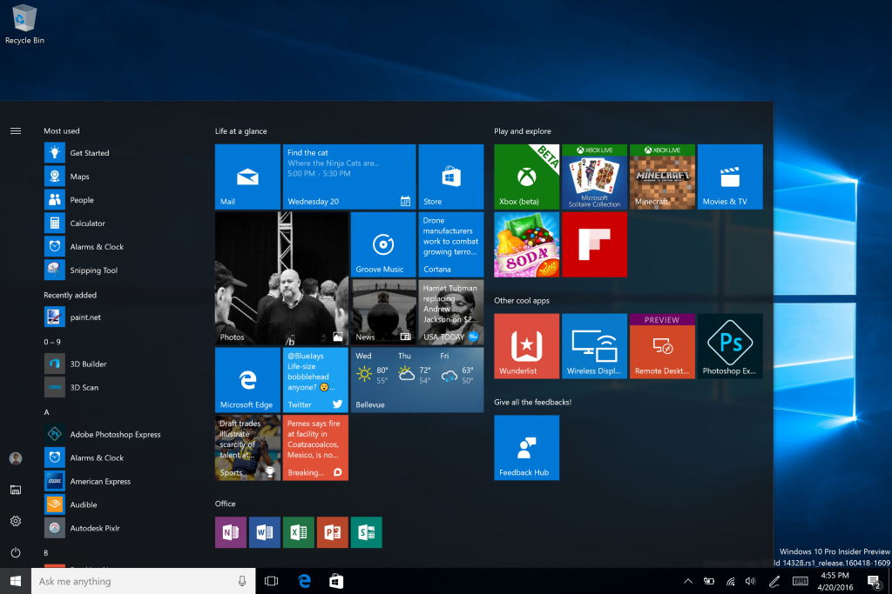

Windows
Microsoft's Windows is a family of graphical operating systems available for an array of devices including desktop PCs, tablets, and smart phones. Each version of the GUI caters to a section of the computing industry.
Current, active versions of Windows families include Windows NT and Windows Embedded; these may encompass subfamilies, e.g. Windows Embedded Compact (Windows CE) or Windows Server. Defunct Windows families include Windows 9x, Windows Mobile and Windows Phone.
Microsoft introduced Windows on November 20, 1985, as a graphical environment for MS-DOS. Windows was Microsoft's to the growing interest in GUIs and Windows dominated the PC sector with over 90% of the market share. Since then, Windows has been the number one OS on the market.